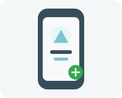
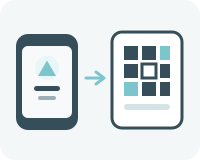
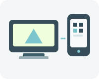
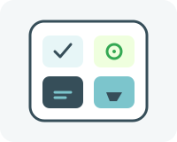
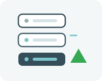
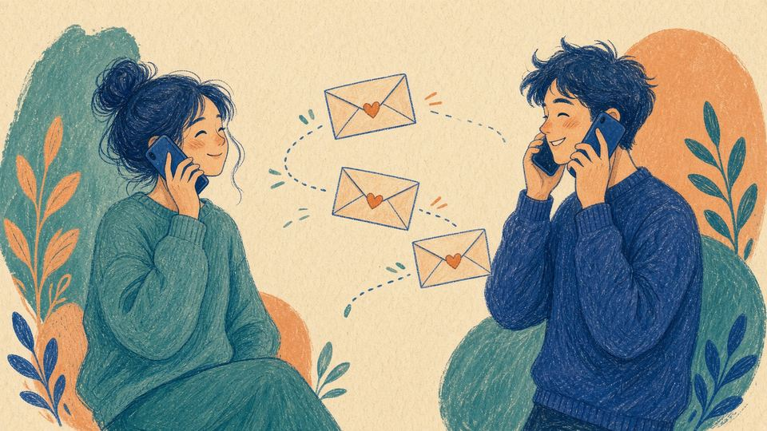

چتمیل و دلتاچت
پیامرسانی آزاد، امن و غیرمتمرکز
به دلتاچت بیا و با خیال راحت پیام بفرست؛ رمزنگاریشده، آزاد و بیدردسر.
از آموزش شروع کنید
 ایمیل و رمزنگاری ایمیل چیست و پیام شما چطور رمزنگاری میشود
ایمیل و رمزنگاری ایمیل چیست و پیام شما چطور رمزنگاری میشود

ساخت نمایه رله (در برنامه فارسی: گذرگاه) چتمیل و نام نمایشی
اضافه کردن مخاطب با QR یا لینک دعوت گروه و کانال حقوق برابر، یا پخش یکطرفه
دستگاه دوم همان نمایه روی گوشی و رایانه
مینیاپ (Webxdc) فایل xdc داخل همان گپ
رله داخلی delta.sudoshz.ir وقتی اینترنت بینالملل قطع است قطعی اینترنت رله دوم و آمادگی پیش از قطعی مدمیل رله دلتاچت روی سرور خودتانچتمیل چیست؟
چتمیل زیرساختی است برای پیامرسانی فوری بر پایه ایمیل. رله چتمیل نامهها را بایگانی نمیکند؛ فقط پیام رمزنگاریشده را میپذیرد، آن را به مقصد میرساند و بعد پاکش میکند.
ساختن نمایه روی این رلهها ساده است: برنامه خودش یک نشانی میسازد و همان لحظه میتوانید پیام بفرستید. لازم نیست گذرواژهای یادداشت کنید یا صندوق ایمیل جدایی داشته باشید.
پروژه چتمیل نرمافزار رله، هسته پیامرسانی و ابزار ساخت برنامه و ربات را بهصورت آزاد منتشر میکند. دلتاچت معروفترین برنامهای است که روی همین زیرساخت کار میکند.
رلهای که الان از داخل ایران در دسترس است در صفحه رلهها آمده است. (در برنامه فارسی به رله «گذرگاه» میگویند.)

دلتاچت چیست؟
دلتاچت یک پیامرسان است. روی گوشی و رایانه نصب میشود؛ یک نمایه میسازید و مخاطبها را با کد QR یا لینک دعوت اضافه میکنید. میتوانید چند نمایه جدا داشته باشید و هر نمایه را روی چند دستگاه باز کنید.
پیامها بهطور پیشفرض رمزنگاری سراسری دارند. تماس صوتی و تصویری تا جای ممکن مستقیم بین دو دستگاه است؛ اگر راه مستقیم نبود از سرور TURN رله کمک میگیرد. در هر دو حالت رمزنگاری سراسری دارد. داخل همان گپ میشود مینیاپ (Webxdc) فرستاد: بازی، رأیگیری یا هر برنامه کوچکی که بخواهید با دیگران در آن شریک شوید.
با ایمیل کلاسیک هم میشود نامه فرستاد، ولی برای گپ روزمره رله چتمیل سادهتر و امنتر است. جزئیات در صفحه امکانات آمده است.
دلتاچت چه کارهایی میکند
- پیام فوری، با چند نمایه و چند دستگاه
- ساخت نمایه روی رله چتمیل، بدون تنظیم دستی ایمیل
- مینیاپ (Webxdc) برای بازی و کار مشترک داخل همان گپ
- رمزنگاری سراسری که بارها مستقل بررسی شده
- نرمافزار آزاد، بر پایه استانداردهای باز اینترنت
چرا دلتاچت؟
بیشتر پیامرسانهای شناختهشده شماره تلفن میخواهند، تبلیغ نشان میدهند و گپ را روی سرور خودشان نگه میدارند. دلتاچت هیچکدام از این سه را ندارد.
- شماره تلفن لازم نیست. نمایه روی یک رله چتمیل ساخته میشود.
- برنامه تبلیغ ندارد.
- هیچ شرکتی همه گپها را در اختیار ندارد. رله را خودتان انتخاب میکنید و میتوانید چند رله داشته باشید تا اگر یکی قطع شد، پیامها از دیگری بروند.
- برنامه آزاد است و کد نسخههای اندروید، iOS و رایانه در مخزن deltachat در دسترس است.
رله داخلی
اگر اینترنت بینالملل قطع شود، رله داخلی شیرازلینوکس (delta.sudoshz.ir) همچنان از داخل ایران در دسترس است.
بهترین راه این است که از همین حالا آن را بهعنوان رله دوم به نمایه فعلیتان اضافه کنید (نسخه ۲.۴۸ به بعد). نمایه و مخاطبها همان میمانند. گامها در صفحه دلتاچت در قطعی اینترنت آمده است.
اگر برنامهتان قدیمی است، میتوانید یک نمایه تازه روی همین رله بسازید؛ گامها در آموزش رله داخلی.